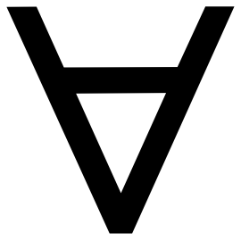

Fri Sep 25 |
Sat Sep 26 |
|
|---|---|---|
| 9:30AM– 10:00AM |
Coffee | |
| 10:00AM– 11:30AM |
Chair: Ethan Russo (Princeton)
|
Chair: Michael Caie (Toronto)
|
| 11:40AM– 1:10PM |
Chair: Jeremy Goodman (JHU)
|
|
| 1:10PM– 2:30PM |
Lunch | |
| 2:30PM– 4:00PM |
Chair: Christopher Sun (NYU)
|
Chair: Cian Dorr (NYU)
|
| 4:20PM– 5:50PM |
Speakers: Branden Fitelson (Northeastern), Zachary Goodsell (NUS), Cian Dorr (NYU), and open discussion
ROUNDTABLE
AI for Higher-Order Metaphysics |
Speakers: Cian Dorr (NYU), Andrew Bacon (USC), Jeremy Goodman (JHU), Christopher Sun (NYU), Ethan Russo (Princeton)
LIGHTNING TALKS
Progress Reports in Open Questions |
